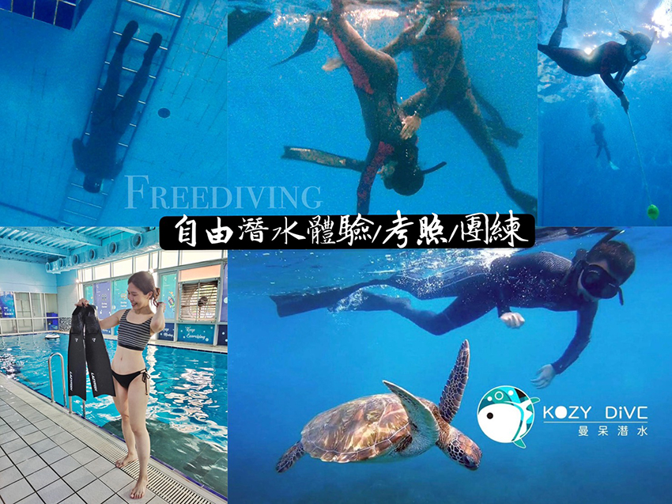

檔車檢修經驗談-以國產125cc打檔車為例(一)
張藝騰│共同工程處 \ 環保事務部
前言
本篇文章屬於業餘交流性質，單純分享我由一位使用者，進入汽修這項博大精深的領域的過程。過程中有需多曲折也交了許多學費，單純的文字與圖片無法完整呈現給讀者，望各位包含。在學習的過程中也得到許多成就感，透過這些經驗讓我習得相關技術，未來有時間希望能透過自學獲得更多的技術與經驗。此次分享的內文有許多進步的空間，歡迎各位專業前輩不吝給予指教與交流，也歡迎有興趣切搓的同仁與我聯絡。
正文
近年來，隨著機車工業的進步與環保法規的更新，噴射燃油引擎 已成為機車之主流，傳統化油器的車越來越少見，本系列文章分享化油器引擎之拆解翻新與組裝過程，給喜歡老車的同好一個交流的空間。另外針對各種專業名詞之介紹會隨機穿插於文章中，後續若有機會，會另外寫一篇文章分享給大家。
首先引擎之翻新為一項耗時耗力之工程，這次的項目，以一部2003年出廠的國產125檔車為施工對象，在施工前首先要對這台車有一定的了解，分析出問題的地方與可能需要的預算，並做好材料與工具的準備，材料的部分端看個人預算，有些使用全新品，有些使用二手良品。準備零件的方式很多，網路資源豐富，也有許多願意教學的前輩願意教學與提供零件。詳細了解過後將車況統計。施工前車況簡述如下：
| 車種 | 循環往復式打檔車 |
| 排氣量 | 125cc |
| 待整理項目 | 1. 引擎嚴重吃機油，1000cc進，200cc出 2. 汽缸壁刮痕嚴重 3. 汽缸頭軸承座崩座 4. 打檔齒輪磨損，導致卡檔問題 |
| 預算 | 1. 車體本身：3000元(含車籍) 2. 總維修預算：7000元(不含外觀處理) |
噴射燃油引擎：又稱為燃油噴射，是一種燃料供應手法，透過電腦計算直接將所需要的燃油精確地注入至引擎的汽缸內以便進行燃燒。傳統的化油器是通過氣體的流動把燃油吸入氣缸中以便燃燒
|  | ||
| 圖 1 引擎拆卸後之車體 | ||
 |
||
| 圖 2 拆解後之引擎零件 |
| 施工步驟： | |
| 1. | 首先將引擎從車體上卸下，建議施工時有小型千斤頂，可預防卸引擎時因過重而摔落。 |
| 2. | 將拆下之引擎進行全分解(越細越好)，畢竟工程浩大，我本身希望一步到位因此會進行全分解及全檢修。分解過程零件一一拍照記錄並妥善分類保存，切記不可使零件四散，必要時將零件置於機油中保存，細小齒輪類零件請用保鮮膜包覆避免遺漏。 |
 |
||
| 圖 3 零件拆解過程 |
| 3. | 拆解後之零件進行細部清潔與檢查，齒輪零件檢查有無崩齒與耗損，我另外有收到車友提供之引擎零件，因此需更換之部分可直接替換，汽缸檢查後發現傷痕過多，送搪缸店修復無法根本解決問題，因此替換一顆全新副廠等級汽缸，並選擇缸徑65mm之汽缸，將修復後之引擎排氣量提升至150cc，缸頭則選用中古貨並送指搪缸店進行修復與整理。 |
| 4. | 在拆解過程中，每一格動作都需格外小心，尤其是零件位置的校正與螺絲鎖入的力道甚至是細部的清潔，都必須細心處理，若急於求成，很可能引發引擎整組報廢的問題，傷財又危險。也因此整個施工環境必須專注且無干擾，對照零件手冊進行，細微組裝必須再三確認，並隨時養成收納分類的習慣，以免重要零件的遺失。 |
| 圖 4 引擎箱體拆解 | 圖 5 寬敞明亮之作業環境 | |
此次分享到汽缸與汽缸頭拆卸完成的部分，下一篇文章我會來介紹引擎中箱拆解與各檔位齒輪組裝並完成引擎之合體，最後會有組裝完成與上車發動，此系列介紹預計三篇完成，更多細節與內容歡迎聯絡我討論交流，未來預計會有基礎保養與車系介紹的文章，歡迎有興趣的同仁與我聯繫。